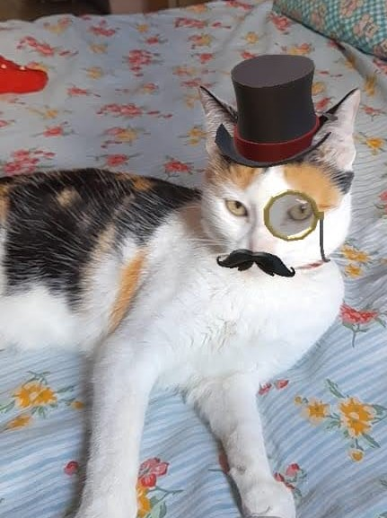
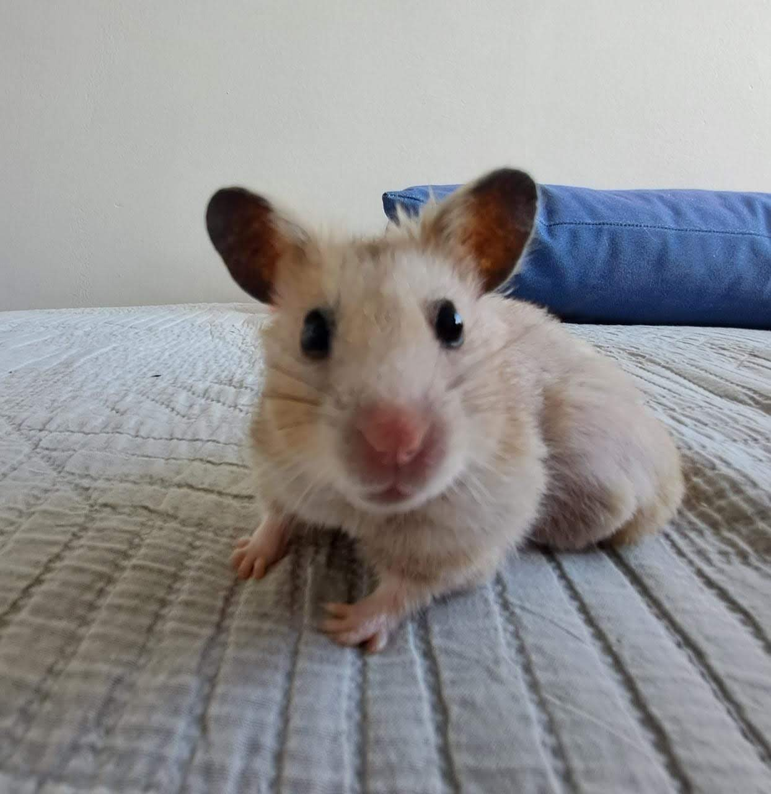

-
Aos 17 anos sai da "caverna" da ignorância e desconhecimento, e, com isso, senti que precisava "tapar alguns buracos" deixados até esse período. Conheci uma renomada PHD em física Gabriela Bailas, ou "Bibi Bailas", a qual me mostrou a dimensão de conteúdo que ainda não conhecia no âmbito científico. Desde então, sou apaixonada pelo universo científico e tecnológico.
-
Com o tempo, o estudo intensivo se fez presente na minha rotina. Durante a época do vestibular decidi que teria que dar o meu melhor. Hoje vejo que todo o esforço foi compensado e estou muito ansiosa para o início das aulas no CIn da UFPE.
-
Uma curiosidade sobre mim bem aleatória é que aprendi espanhol com 11 anos simplesmente assistindo novelas mexicanas no SBT. Hoje pretendo ficar fluente também no inglês e, futuramente, quem sabe, no francês.

-
Amo gatinhos e hamsters. Tenho uma gata chamada Nina e uma hamster falecida chamada Maria Antonieta. Sinto que nós humanos não merecemos os animais, eles são simplesmente uns anjinhos.
 